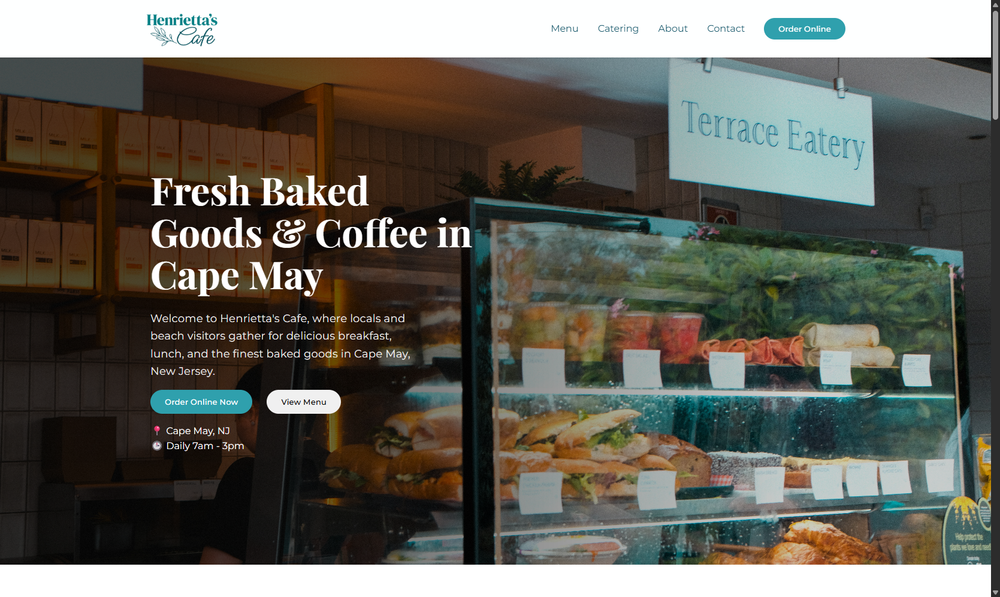
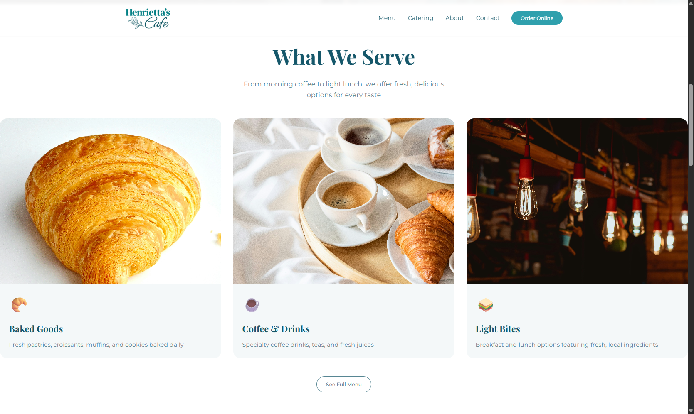
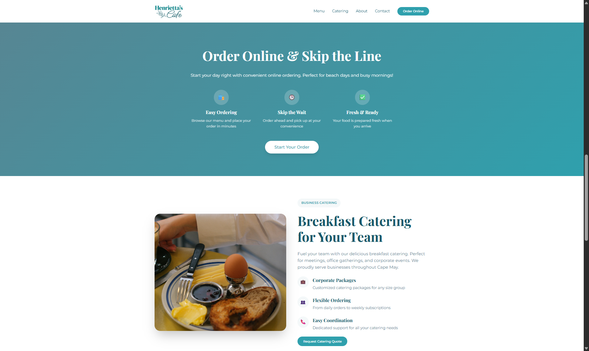

Apresentar a marca
Comunicar a proposta da cafeteria por meio de uma experiência acolhedora e visualmente consistente.
Uma presença digital acolhedora para apresentar a cafeteria, destacar seus produtos e aproximar clientes das opções de pedidos online.

A Henrietta's Cafe precisava fortalecer sua presença online e criar um canal digital que aproximasse a cafeteria de seus clientes. O projeto reuniu a apresentação da marca, seus produtos e informações essenciais em uma experiência acolhedora e fácil de navegar.
Além de apresentar a cafeteria, o site deveria tornar mais simples o acesso ao cardápio e às opções de pedidos online.
A página precisava expressar a personalidade da cafeteria e, ao mesmo tempo, organizar conteúdos úteis para diferentes intenções: conhecer a marca, explorar o cardápio ou fazer um pedido.
Comunicar a proposta da cafeteria por meio de uma experiência acolhedora e visualmente consistente.
Reunir cardápio, história, localização e horário de funcionamento em uma página organizada.
Destacar chamadas para ação e simplificar o caminho até as opções de pedidos disponíveis.
O trabalho partiu das necessidades do negócio e da identidade já existente, traduzindo as sensações desejadas em decisões de interface e estrutura.
Compreensão das necessidades do cliente e das sensações que o site deveria transmitir: modernidade, tranquilidade e aconchego.
Aprimoramento da paleta e adaptação da identidade visual ao ambiente digital, preservando a essência da marca.
Definição da hierarquia visual, combinação tipográfica e organização das seções para equilibrar marca, navegação e objetivos comerciais.
Implementação da página com HTML e SCSS, usando ferramentas de inteligência artificial como apoio ao desenvolvimento.
Tons azulados e turquesa dão personalidade à interface, enquanto a tipografia combina um caráter editorial com leitura funcional.
Um bom dia começa aqui.
Serifada, elegante e editorial.
Cardápio · Pedidos
Contemporânea, funcional e legível.
A organização do conteúdo conduz da descoberta da cafeteria às informações práticas e às opções de atendimento.

A abertura combina a identidade da cafeteria com acesso rápido ao cardápio, aos pedidos online e às informações para visitar o espaço.

Panificados, cafés e bebidas, e opções leves aparecem em categorias visuais que ajudam o visitante a conhecer a variedade do menu.

A seção explica como fazer pedidos com antecedência e apresenta o catering para cafés da manhã e eventos de empresas.
O projeto estabeleceu um ponto de contato digital que reúne a apresentação da marca, seus produtos e informações úteis para os clientes.
Criação de um site dedicado à cafeteria e à comunicação com seu público.
Adaptação da identidade existente ao ambiente digital e às sensações desejadas.
Cardápio, história, localização e horário organizados em uma experiência integrada.
Chamadas de ação em destaque para apoiar o acesso aos canais de pedidos online.
O projeto conectou refinamento visual e implementação front-end para atender às necessidades de um negócio local.
Trabalhar com uma marca existente exige compreender sua essência e adaptar a linguagem às necessidades de uma interface.
Cores, tipografia e hierarquia precisam expressar a personalidade da marca e facilitar a navegação.
Informações organizadas e chamadas para ação conectam a descoberta da marca aos próximos passos do cliente.
Ferramentas de IA apoiaram a exploração de possibilidades de implementação e a codificação, mantendo o foco na interface e no resultado.